17 Подключение АК-ШУМКАР к другим системам¶
АК-ШУМКАР может быть подключен к другим системам.
Некоторые системы уже интегрированы в установку «Ак Шумкар»:
verinice ITSM-система (см. главу 17.1)
Система Диптихи Nagios (см. главу) 17.2)
Центр управления огневой мощью Cisco (см. главу 17.3)
Устройство предлагает множество интерфейсов, которые обеспечивают связь с другими системами:
- Протокол управления Ак Шумкар (GMP)
Протокол управления «Ак Шумкар» позволяет полностью удаленно управлять устройством. Протокол поддерживает создание пользователей, создание и запуск задач сканирования и экспорт отчетов.
- Формат отчета
Устройство может представлять результаты сканирования в любом формате. Для этого устройство уже поставляется с множеством предустановленных форматов отчетов (см. главу 10.1). Дополнительные форматы отчетов могут быть разработаны в сотрудничестве с «Ак Шумкар».
- Оповещение через системный журнал, электронную почту, ловушку SNMP или HTTP (см. главу 9.12)
- Автоматическая пересылка результатов через коннекторы
Эти разъемы созданы компанией «Ак Шумкар», проверены и интегрированы в прибор.
- Мониторинг через SNMP
Веб-страница https://docs.ak-shumkar.net/API/SNMP/snmp-gos-22.04-24.10.en.html Обеспечивает настоящий файл базы управляющей информации (MIB). Файлы MIB содержат файлы, которые могут быть запрошены SNMP, оборудованными.
17.1 Использование Веринис¶
Веринице — это бесплатная система управления информационной безопасностью (ISMS) с открытым исходным кодом, разработанная СерНет.

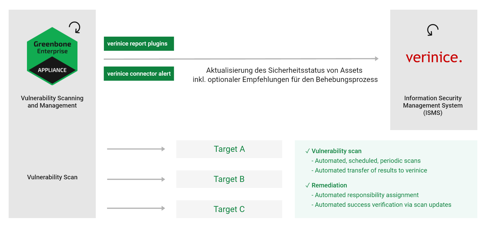
Рис. 17.1 Интеграция устройства с verinice¶
Вериница подходит для:
Рабочий процесс устранения уязвимостей
Проведение анализа рисков на основе ISO 27005
Эксплуатация СМИ на основе ISO 27001
Выполнение оценок безопасности в соответствии со спецификациями VDA.
Доказательство соответствия таким стандартам, как ISO 27002, IDW PS 330.
Устройство может поддерживать работу СМИ. Для этого Ак Шумкар предлагает две формы для экспорта данных с устройства в Веринице:
Веринице ИСМ
Веринице ISM все результаты
Можно полностью автоматически передавать данные с устройства на verinice.PRO, серверное расширение verinice.
Примечание
Для получения поддержки по использованию разъема обратитесь в SerNet или в Команда поддержки Ак Шумкар.
17.1.1 Управление ИТ-безопасностью¶
Форматы отчета Веринице ИСМ и Веринице ISM все результаты для verinice доступно через AK-SHUMKAR ENTERPRISE FEED. С помощью этих форматов в отчете «Ак Шумкар» упоминаются рабочие уязвимости процесса в Verinice.
- Веринице ИСМ
При использовании формата отчета Веринице ИСМ, verinice использует функцию заметок (см. главу 10.7) для создания предметов для обработки. К каждому результату необходимо приложить примечание, которое необходимо передать Верине. Если используется этот формат отчета и в задаче нет примечаний, будут импортированы только ресурсы, а также полный отчет об уязвимостях.
- Веринице ISM все результаты
При использовании формата отчета Веринице ISM все результаты, все результаты передаются по умолчанию. Нет необходимости прикреплять к результатам пометку, которая должна быть передана в Веринице.
После завершения сканирования отчет необходимо экспортировать в один из форматов отчета, описанных выше (см. главу 10.2.2). Оба формата отчета можно настроить с помощью конфигурации отчета (см. главу 10.1.4). Создается файл ВНА. Это ZIP-файл, генерирующий данные самостоятельно.
Примечание
В следующем примере использовалась SerNet verinice 1.18.1.
Если использовать другую версию, действие может улучшиться. Обратитесь в службу поддержки Веринис за помощью.
17.1.1.1 Импорт отчета о сканировании ISM¶
Отчет можно импортировать в Веринице следующим образом:
Запустите Веринис.
Выбирать «Просмотр» > «Показать перспективу» > «Управление информационной безопасностью». в меню (см. Рис. 17.2).
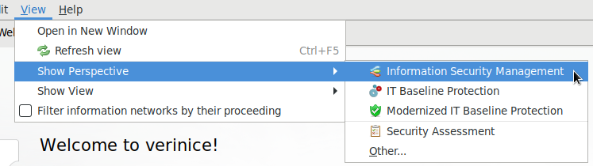
Рис. 17.2 Открывая перспективу Управление информационной безопасностью¶
Создайте организацию, нажав (видеть Рис. 17.3).
Примечание
Окно определения реквизитов организации можно просто закрыть.
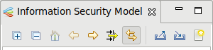
Рис. 17.3 Создание новой организации¶
Нажмите Выбрать файл… и выберите отчет ISM. Остальные параметры можно сохранить настройками по умолчанию (см. Рис. 17.4).
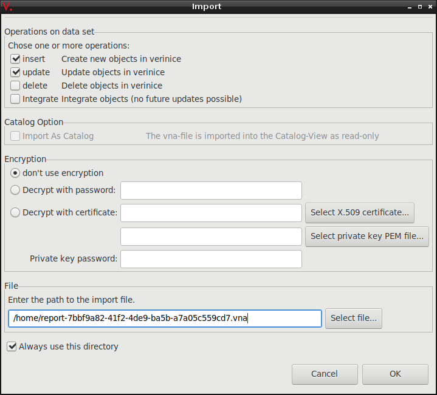
Рис. 17.4 Выбор отчета ISM¶
Нажмите ХОРОШО.
→ Ответственность за безопасность ISM импортируется и может быть возвращена в версию (см. Рис. 17.5).
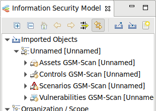
Рис. 17.5 Раскрытие результатов отчета ISM¶


Процесс отслеживания уязвимостей импортированной организации можно разделить на два подпроцесса:
Создание задач
Устранение уязвимостей
17.1.1.2 Создание задач¶
Перед созданием задач данные для организации необходимо подготовить следующим образом:
После первого импорта организации ее необходимо переместить из группы импортируемых объектов на верхний уровень.
Щелкните правой кнопкой мыши организацию и выберите Резать. Щелкните правой кнопкой мыши на верхнем уровне окна. Модель информационной безопасности и выберите Вставить.
Активы и элементы управления должны быть сгруппированы.
Щелкните правой кнопкой мыши на Активы и выберите Группировать по тегам… (видеть Рис. 17.6).
Подтвердите сообщение, нажав ХОРОШО.
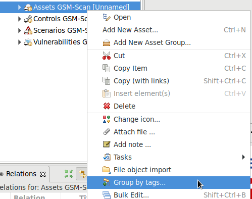
Рис. 17.6 Группировка активов¶
Щелкните правой кнопкой мыши на Управление GSM-Сканированием и выберите Группировать по тегам….
Подтвердите сообщение, нажав ХОРОШО.
За всеми группами активов должно быть закреплено ответственное лицо.
Разверните организацию, щелкните правой кнопкой мыши Персоны и выберите Добавить человека….
Назначьте вновь созданного человека путем перетаскивания в группу активов.
→ Успешное присвоение можно отобразить в окне Отношения нажав Активы (видеть Рис. 17.7).
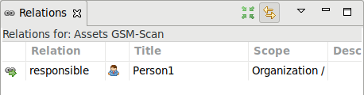
Рис. 17.7 Отображение отношений для группы¶
Щелкните правой кнопкой мыши организацию и выберите Задачи > Ак Шумкар: Запустить процесс уязвимости….
→ Проверяется, все ли активы и элементы управления сгруппированы и все ли группы активов закреплены за лицом. В сообщении будет отображен результат проверки.
Продолжите создание задачи или отмените создание.
Задача по устранению уязвимостей называется «Устранение уязвимостей».


17.1.1.3 Устранение уязвимостей¶
Созданными задачами можно управлять с помощью представления Задача («Просмотр» > «Показать вид» > «Задачи». в меню) или веб-интерфейс версии verinice.PRO (в разделе: Задачи ISO 27000).
Задача содержит элементы управления, сценарии и активы, которые подключены к группе управления и назначены ответственному лицу. Ответственное лицо устраняет уязвимости для всех активов.
Примечание
В случае истечения срока выполнения задачи «Устранение уязвимостей» ответственному лицу отправляется письмо с напоминанием.
После завершения задачи все связи между активами и сценариями, назначенные задаче, удаляются.
Возможны следующие состояния элемента управления:
Реализовано: активы больше не назначаются сценарию.
Частично: другие связи с активами все еще существуют.
17.2 Использование Нагиоса¶
Nagios может интегрировать результаты в качестве дополнительного теста для решения своих задач. Сканируемые системы автоматически распознаются контролируемыми сетями. При этом результаты в конечном итоге становятся доступными для правил оповещений и других процессов Nagios.

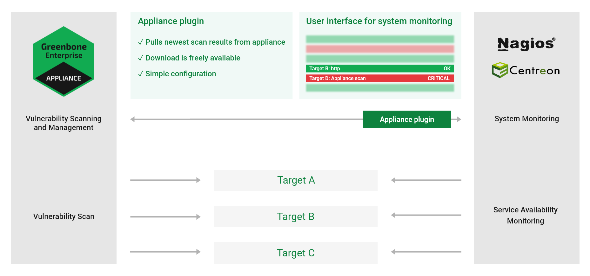
Рис. 17.8 Соединение Nagios с телефоном¶
При подключении Nagios к телефону Nagios возьмет на себя контролирующую роль.
Nagios регулярно и автоматически получает новые результаты через телефон.
Это делается с помощью команды Nagios, которая использует инструмент gvm-скрипт вызвать сценарий проверка-gmp.gmp.py.
Примечание
Другие продукты, совместимые с Nagios, такие как Open Monitoring Distribution, Icinga, Centreon и т. д. д. д., как правило, должно работать, но могут быть некоторые небольшие корректировки описанных шагов.
17.2.1 Настройка пользователя устройства¶
Для доступа к Nagios пользователь должен выбрать вход на устройстве. Для этого необходимо настроить конечный кабель (или несколько кабельных объектов) для всех хостов, в состоянии безопасности которых необходимо зарегистрироваться.
Примечание
Используемый здесь пример конфигурации предполагает, что существует только одна соответствующая цель, но технически возможно связать сложные настройки с несколькими целями и несколькими устройствами.
Учетная запись пользовательского устройства, предоставляемая для запроса сцен GMP, должна быть надежным объектом или, по крайней мере, иметь неограниченный доступ к ним для чтения.
Задачи следует регулярно запускать в виде запланированных проверок.
Кроме того, должен быть возможен сетевой доступ к устройству через GMP. Поэтому доступ к GMP необходимо активировать в меню администрирования ГСН (см. гл. 14.2).
17.2.2 Настройка сценария¶
Ак Шумкар предоставляет сценарий проверка-gmp.gmp.py как часть коллекции скриптов gvm-tools (см. главу 14.3).
Этот сценарий может быть вызван решением для мониторинга с помощью gvm-скрипт.
Примечание
Ниже приводится сообщение о том, что Nagios установлен в /usr/local/нагиос/, впоследствии именуемый /.../.
При необходимости измените местоположение файла.
Скопируйте плагин в
/.../libexec/.Проверьте, может ли скрипт ограничить устройство по сети, активирован GMP и правильно создан пользователем:
Примечание
В следующем заседании замените IP-адрес IP-адреса устройства и укажите имя пользователя и созданный пароль.
nagios-host# gvm-script --gmp-username="имя пользователя" --gmp-password="пароль" \
ssh --hostname 192.168.10.169 /.../libexec/check-gmp.gmp.py --ping \
GMP OK: Ping successful
Проверьте, есть ли доступ к данным:
nagios-host# gvm-script --gmp-username="имя пользователя" --gmp-password="пароль" \
ssh --hostname 192.168.10.169 /.../libexec/check-gmp.gmp.py \
-F 192.168.10.130 --last-report -T «Сканировать подозрительный хост» --status
GMP CRITICAL: 284 vulnerabilities found - High: 118 Medium: 153 Low: 13
Report did contain 1 errors для IP 192.168.10.130
|Высокий=118 Середина=153 Низкий=13
Скрипт поддерживает несколько ключей командной строки. Их можно отобразить с помощью:
Нагиос-хозяин# gvm-script -c /.../etc/gvm-tools.conf ssh --hostname
192.168.10.169 сценарии/проверять-GMP.GMP.пи -ЧАС
использование: проверять-GMP [-ЧАС] [-В] [--кэш [КЭШ]] [--чистый] [-Ф АДРЕС ХОСТА] [-Т ЗАДАЧА]
...
Проверять-GMP Нагиос Команда Плагин 2.0.0 (С) 2017-2019 Ак Шумкар Сети ГмбХ
...
необязательный аргументы:
-ЧАС Показывать этот помощь сообщение и Выход.
-В, --версия Показывать программаномер версии и выход
--кэш [КЭШ] Путь к кэш файл. По умолчанию: /tmp/check_gmp/отчеты.БД.
--чистый Активировать к чистый тот база данных.
...
Если тесты пройдены успешно, проверку можно будет интегрировать в монитор Nagios.
Добавьте хост для мониторинга в раздел
ХОЗЯИН ОПРЕДЕЛЕНИЯв файле конфигурации Nagios/.../etc/objects/localhost.cfg.В этом примере хостом является Metasploitable Linux.
define host{
use linux-server
host_name metasploitable
псевдоним metasploitable
address 192.168.10.130
}
В том же конфигурационном файле, в разделе
УСЛУГА ОПРЕДЕЛЕНИЯ, определите новый сервис, который создает команду Nagioscheck_gmp_status.Как показано в примере, имя задачи, из которой нужно получить отчет, передается команде в качестве аргумента.
define service{
use local-service ; Name of service template to use
host_name metasploitable
service_description GMP task last report status
check_command check_gmp_status!metasploitable
}
Создайте
check_gmp_statusкоманда в файле/.../etc/objects/commands.cfg.
define command{
command_name check_gmp_status
command_line gvm-script -c /.../etc/gvm-tools.conf ssh
--hostname 192.168.10.169 $USER1$/check-gmp.gmp.py -F $HOSTADDRESS$
--last-report -T $ARG1$ --status
}
Примечание
В командной строке видно, что инструменту не передаются никакие параметры имени пользователя и пароля, а только файл конфигурации. gvm-скрипт (см. главу 14.3).
Перезапустите сервис Nagios, чтобы применить новую конфигурацию.
nagios-host# systemctl restart nagios

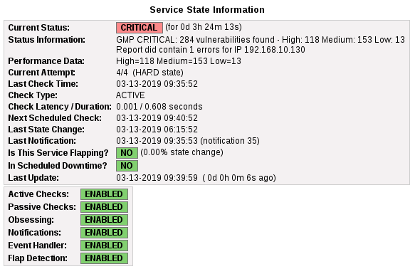
Рис. 17.9 Nagios отображает состояние отслеживаемого хоста¶
17.2.3 Кэширование и многопроцессорность¶
Сценарий проверка-gmp.gmp.py кэширование опоры.
Все новые отчеты будут кэшироваться на базе данных SQLite.
Первый вызов с неизвестного хоста займет больше времени, так как отчет необходимо получить с устройства.
Последующие вызовы будут передавать настоящий отчет с устройства только в том случае, если окончание времени изменится.
В противном случае используется информация из базы данных. Это значительно снижает нагрузку как на сервер Диптихи, так и на само устройство.
Файл кэша записывается в /tmp/check_gmp/reports.db по умолчанию. Другое расположение базы данных можно указать с помощью переключателя командной строки. --cache.
Чтобы еще больше снизить нагрузку как на сервер мониторинга, так и на устройство, плагин может ограничить максимальное количество одновременно работающих экземпляров плагина.
Дополнительно запущенные экземпляры останавливаются и ждут продолжения. Значение по умолчанию MAX_RUNNING_INSTANCES равно 10. Значение по умолчанию можно изменить с помощью переключателя командной строки. -Я.
17.3 Использование Центра управления огневой мощью Cisco¶
Cisco Firepower Management Center (ранее Sourcefire Intrusion Prevention System (IPS)) — одно из ведущих решений для обнаружения и защиты от вторжений в компьютерных сетях. В качестве системы обнаружения вторжений в сети (NIDS) ей поручено обнаружение, оповещение и защита от атак в сети.
Чтобы правильно идентифицировать и классифицировать атаки, Центру управления огневой мощью требуется как можно больше информации о системах в сети, установленных на них приложениях и потенциальных уязвимостях для них обоих. Для этой цели Центр управления огневой мощью имеет собственную базу данных активов, которую можно дополнить информацией с устройства. Кроме того, Центр управления огневой мощью может запустить автоматическое сканирование, если что-то заподозрит.
Доступны следующие способы подключения:
- Автоматическая передача данных с телефона на NIDS/IPS
Если устройство и NIDS/IDS настроены соответствующим образом, передачу данных с устройства на NIDS/IPS можно легко использовать, как и любую другую функцию оповещения устройства. После завершения подготовки отчет будет отправлен в виде ссылки в NIDS/IPS в соответствии с заданными критериями. Если задача запускается автоматически еженедельно, создается полностью автоматизированная система. оповещения и оптимизации.
- Активный контроль устройства с помощью NIDS/IPS
При работе могут возникнуть NIDS/IPS. Серьезные происшествия со средним риском. В таком случае NIDS/IPS может дать указание устройству проверить систему. [1].
Примечание
Для использования способов подключения необходимо включить возможность получения данных в Центре управления огневой мощью.
17.3.1 Настройка клиентов Host-Input-API¶
Host-Input-API — это интерфейс, через который Центр управления огневой мощью принимает данные из других приложений для баз данных активов.
Войдите в Центр управления огневой мощью.
Выбирать Система > Интеграция в меню.
Выберите вкладку Хост-клиент ввода.
Введите IP-адрес устройства в поле ввода. Имя хоста (видеть Рис. 17.10).
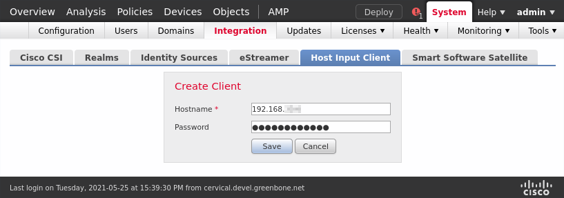
Рис. 17.10 Создание клиента ввода хоста¶
Введите пароль в поле ввода Пароль.

Нажмите Сохранять.
Примечание
Соединение зашифровано TLS.
→ Центр управления огневой мощью автоматически создает закрытый ключ и сертификат.
В сертификате, указанном выше, IP-адрес будет использоваться в качестве общего имени и проверяться, когда клиент устанавливает соединение. Если клиент использует другой IP-адрес, соединение не будет обнаружено.
Созданный файл PKCS#12 дополнительно защищен паролем.
После этого сертификат и ключ создаются и доступны для загрузки.
Нажмите чтобы скачать файл (см. Рис. 17.11).
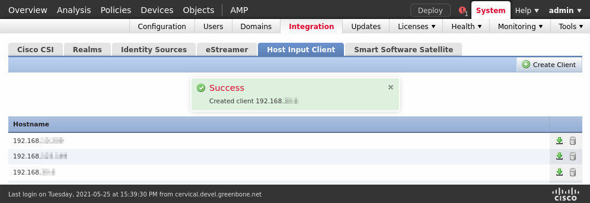
Рис. 17.11 Загрузка созданного файла PKCS#12¶


17.3.2 Настройка оповещений соединений Sourcefire¶
Теперь на устройстве необходимо настроить соответствующее оповещение.
Выбирать Конфигурация > Оповещения в меню.
Создайте новое оповещение, нажав
 .
.Определите предупреждение (см. Рис. 17.12).
Кончик
Информацию для ввода в поля ввода см. в главе. 9.12.
Выбирать Соединитель источника огня в раскрывающемся списке Метод.
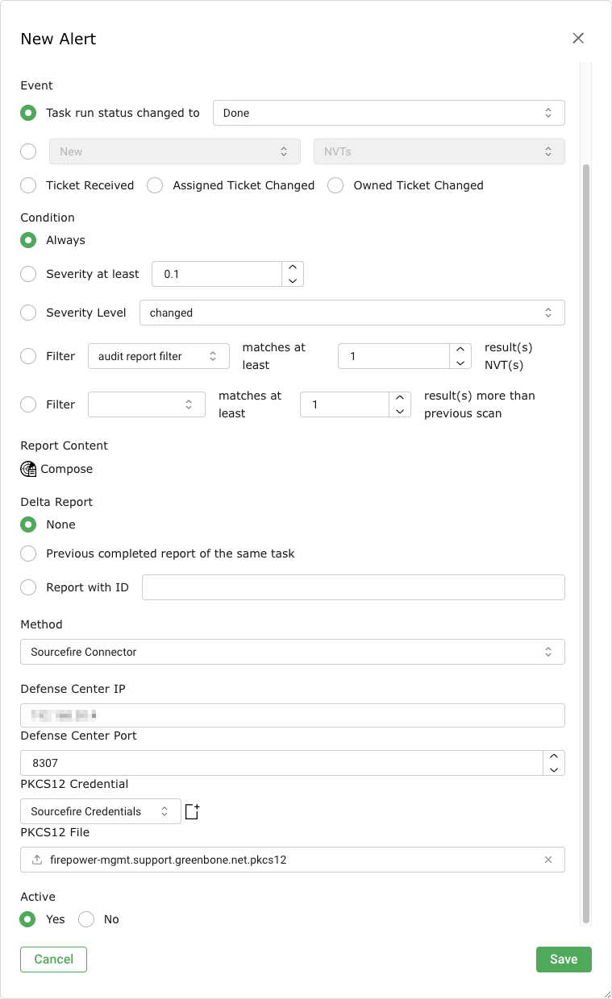
Рис. 17.12 Создание оповещений с помощью Sourcefire Connector¶
Введите IP-адрес Центра управления в поле ввода. Центр обороны ИПи порт, используемый для подключения к нему, в поле ввода Центр обороны Порт.
Примечание
Если пароль был назначен при получении клиента, пароль для файла PKCS#12 должен быть указан в качестве учетных данных (см. главу). 9.3.2.1).
Выберите учетные данные в раскрывающемся списке. Учетные данные PKCS12.
Примечание
Новые учетные данные можно создать, нажав кнопку
.Предоставьте файл PKCS#12, нажмите кнопку. Просматривать….
Нажмите Сохранять.

17.4 Использование Алембы vFire¶
vFire — это приложение для управления корпоративными сервисами, разработанное Алемба.
Устройство можно настроить на создание билетов в экземпляре vFire на основе таких событий по мере их завершения.
17.4.1 Предварительные требования для Alemba vFire¶
Для работы должны быть выполнены следующие предварительные условия: встретился в системе vFire:
Установка vFire должна поддерживать RESTful Alemba API, который был добавлено в vFire версии 9.7. Устаревший API старой версии не соответствует требованиям. через разъем Ак Шумкар.
Клиент Alemba API с таким типом сеанса (аналитик/пользователь) и вход по паролю должен быть включен.
Учетная запись пользователя, которую следует использовать, требует разрешения на использование API Alemba.
17.4.2 Настройка оповещений Alemba vFire¶
Чтобы устройство автоматически вызывало запросы (так называемые «вызовы») в vFire, необходимо настроить оповещение следующим образом:
Выбирать Конфигурация > Оповещения в меню.
Создайте новое оповещение, нажав
.Определите предупреждение.
Кончик
Информацию для ввода в поля ввода см. в главе. 9.12.
Выбирать Алемба vFire в раскрывающемся списке Метод.
Нажмите Сохранять.
Можно определить следующие детали оповещения:
- Форматы отчетов
Форматы отчета, используемые для вложений. Можно выбрать несколько форматов отчета или оставить выбор пустым, если вложения не нужны.
- Базовый URL
Это URL-адрес экземпляра Alemba, включая имя сервера и виртуальный каталог. Например, если доступ к пользовательскому интерфейсу осуществляется через
https://alemba.example.com/vfire/core.aspx, базовый URL будет иметь видhttps://alemba.example.com/vfire.- Полномочия
Имя пользователя и пароль, необходимые для входа в Alemba vFire.
- Тип сеанса
Тип используемого сеанса. Это может быть как «аналитик», так и «пользователь».
В качестве «аналитика» можно выполнять некоторые действия, недоступные «пользователю». «Пользователю» требуются специальные разрешения для этих действий, а количество одновременных входов в систему может быть ограничено.
- Идентификатор клиента Алемба
Это идентификатор клиента Alemba API (см. главу 17.4.1).
- Раздел
Раздел, в котором будет создан билет. Дополнительную информацию о разделении см. в справке Алемба vFire.
- Описание вызова
Это шаблон текста описания, используемый для вновь созданных вызовов. Можно использовать те же заполнители, что и в поле ввода сообщения метода оповещения по электронной почте (см. главу 9.12).
- Шаблон звонка
Имя шаблона вызова, который будет использоваться для вызовов, созданных оповещений. Шаблон звонка можно настроить в vFire для заполнения всех полей, которые непосредственно участвуют в оповещениях.
- Тип вызова
Имя типа вызова, который будет использоваться для вызовов, созданных оповещением.
- Влияние
Полное имя значения воздействия.
- срочность
Полное имя значения срочности.
17.5 Использование Спланка¶
Устройство можно настроить на отправку результатов через корпоративную настройку Splunk для дальнейшего анализа и корректировок.
Подключение устройства к решению Splunk не является частью основной функциональности устройства. В качестве дополнения «Ак Шумкар» используйте приложение для экспертов с локальными решениями Splunk Enterprise. Применение в настоящее время доступно по адресу https://download.ak-shumkar.net/tools/Ак Шумкар-Splunk-App-1.0.1.tar.gz.
Важный
Внешние ссылки на веб-страницу загрузки «Ак Шумкар» чувствительны к регистру.
Обратите внимание, что прописные и строчные буквы, а также специальные символы необходимо вводить именно так, как здесь написано.
Примечание
Если возникли проблемы с загрузкой или тестированием приложения, свяжитесь с Команда поддержки Ак Шумкар.
В прошлом используется Splunk Enterprise версии 8.5. Установка приложения на Splunk Light не является проблемой. Подключение устройства к Splunk Cloud не происходит.
17.5.1 Настройка приложения «Ак Шумкар-Сплан껶
17.5.1.1 Установка приложения¶
Приложение «Ак Шумкар-Спланк» можно установить следующим образом:
Откройте Splunk Enterprise.
Нажмите в левой панели меню (см. Рис. 17.13).


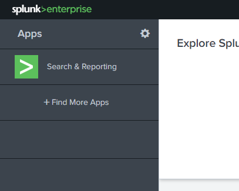
Рис. 17.13 Установка приложения Splunk¶
Нажмите Установить приложение из файла.
Нажмите Просматривать….
Выберите файл TAR приложения «Ак Шумкар-Splunk».
Нажмите Загрузить.
17.5.1.2 Настройка приложения Ак Шумкар-Splunk¶
Для настройки устройства необходим порт приложения «Ак Шумкар-Спланк».
Проверьте порт приложения Ак Шумкар-Спланк следующим образом:
Выберите приложение «Ак Шумкар-Спланк» в левой панели меню.
Выбирать Настройки > Ввод данных в меню.
Нажмите TCP (видеть Рис. 17.14).
Примечание
Приложение «Ак Шумкар-Splunk» устанавливает ввод данных на порт 7680/TCP (порт по умолчанию) и помечает в соединениях данные Результаты сканирования Ак Шумкара и помещает его в индекс по умолчанию.

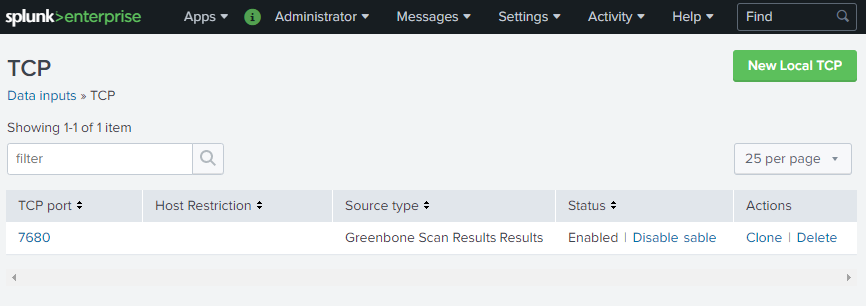
Рис. 17.14 Проверка порта приложения Ак Шумкар-Спланк¶
Чтобы сделать данные более удобными для пользователя, имена полей можно заменить следующим образом:
В ряду Ак Шумкар, нажмите Просмотр объектов.
Нажмите Результаты результата Ак Шумкар: поля FIELDALIAS-reportfields.
Введите псевдонимы имен полей в соответствующие поля ввода (см. Рис. 17.15).
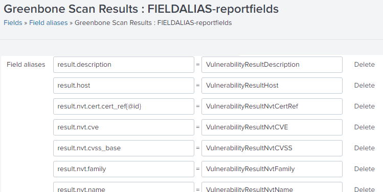
Рис. 17.15 Изменение псевдонимов имен полей¶

17.5.2 Настройка оповещений Splunk¶
Устройство передает результаты в формате видеоотчета XML через систему оповещения непосредственно на главном сервере Splunk.
Примечание
На панели инструментов приложения «Ак Шумкар-Спланк» отображаются результаты только из отчетов менее 7 дней назад.
Если отчет отправлен более 7 дней, на панели Диптихова не будет результатов Google. Однако результаты отображаются в основном на индексном сервере Splunk.
17.5.2.1 Создание оповещений Splunk¶
Оповещение создается следующим образом:
Выбирать Конфигурация > Оповещения в меню.
Создайте новое оповещение, нажав
.Определите предупреждение (см. Рис. 17.16).
Кончик
Информацию для ввода в поля ввода см. в главе. 9.12.
Выбирать Отправить хосту в раскрывающемся списке Метод.
Введите IP-адрес сервера Splunk в поле ввода. Отправить хосту и
7680в поле ввода в порту.Примечание
TCP-порт по умолчанию — 7680.
Эту настройку можно проверить в приложении Ак Шумкар-Спланк, как описано в главе. 17.5.1.2.
Выбирать XML в раскрывающемся списке Отчет.
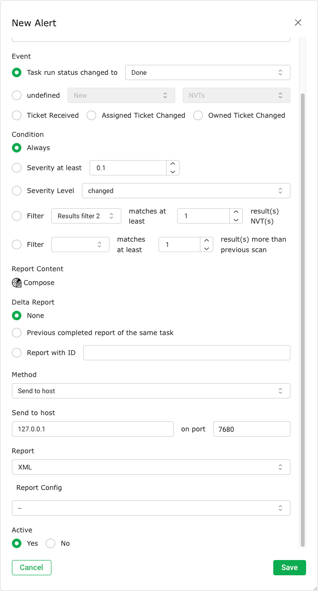
Рис. 17.16 Настройка оповещений Splunk¶
Нажмите Сохранять.

17.5.2.2 Добавление оповещений Splunk к задаче¶
Оповещение теперь можно выбрать при создании новой задачи (см. главу 9.2.2) или быть добавлен к существующей задаче (см. главу 9.12.2).
17.5.2.3 Тестирование оповещений Splunk¶
В целях тестирования существующие отчеты могут обрабатываться оповещением.
Выбирать Сканы > Отчеты в меню.
Нажмите на дату отчета.
Нажмите
 .
.Выберите оповещение в раскрывающемся списке. Тревога (видеть Рис. 17.17).
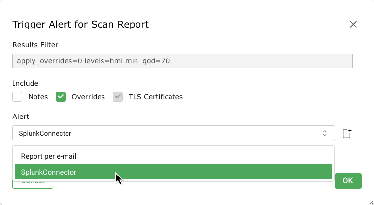
Рис. 17.17 Запуск оповещения¶
Нажмите ХОРОШО.

17.5.3 Использование приложения «Ак Шумкар-Splunk»¶
17.5.3.1 Доступ к информации в Splunk¶
Чтобы получить доступ к информации в Splunk, последовательно в панели управления «Ак Шумкар» следующим образом:
Откройте Splunk Enterprise.
Выберите приложение «Ак Шумкар-Спланк» в левой панели меню.
Выбирать Панели мониторинга в меню.
Нажмите Ак Шумкар Панель управления.
Примечание
На панели инструментов приложения «Ак Шумкар-Спланк» отображаются результаты только из отчетов менее 7 дней назад.
Если отчет отправлен более 7 дней, на панели Диптихова не будет результатов Google. Однако результаты отображаются в основном на индексном сервере Splunk.

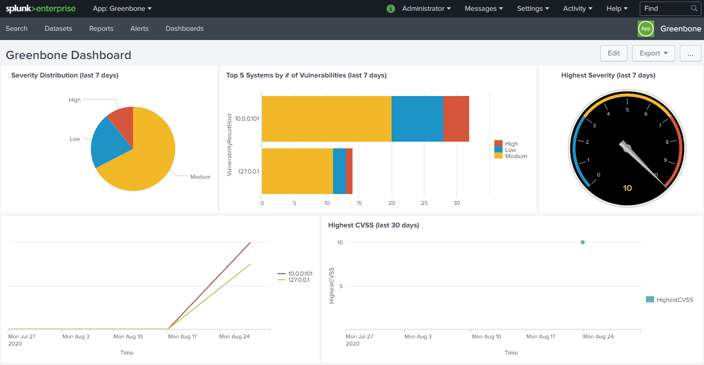
Рис. 17.18 Кабинет «Ак Шумкар» в приложении «Ак Шумкар-Splunk»¶
Поле ввода CVE-ID Панель управления ниже может использоваться для отображения количества хостов, связанных с CVE, в течение времени.
Примечание
Если поле ввода осталось пустым и Входить При изменении количества хостов, подключенных ко всем CVE.
17.5.3.2 Выполнение поиска¶
Поскольку информация, пересылаемая через телефон, индексируется Splunk, представление определения можно использовать для поиска данных любым следующим образом:
Откройте Splunk Enterprise.
Выберите приложение «Ак Шумкар-Спланк» в левой панели меню.
Выбирать Поиск в меню.
Введите индекс и значение, которое следует искать, в поле ввода.
Выберите временное окно в раскрывающемся списке справа от поля ввода.


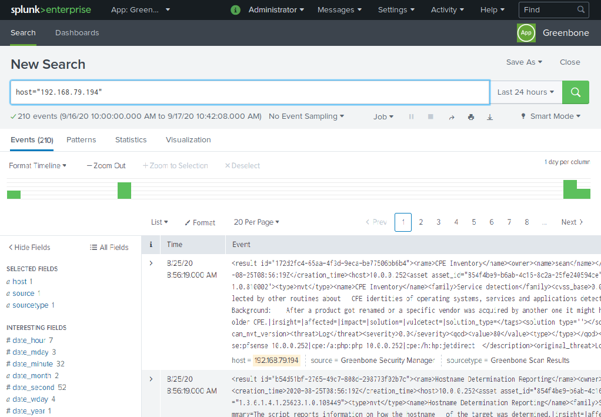
Рис. 17.19 Осуществление поиска в приложении «Ак Шумкар-Сплан껶
Некоторые поддерживаемые индексы:
хозяин
источник, тип источника
дата_час, дата_минута, дата_месяц, дата_год, дата_mдата, дата_вдень, дата_зона
УязвимостьРезультатNvtCVE
УязвимостьResultNvtCVSS
УязвимостьРезультатКод
УязвимостьResultSeverity
УязвимостьРезультатУгроза
17.5.3.3 Создание информационной панели для 5 наиболее затронутых хостов и для входящих отчетов¶
Можно создать новую панель «Диптихи», на которой будут находиться 5 наиболее важных хостов за все время и входящие отчеты с устройства. Панель «Диптихи» будет работать каждый раз, когда на экране Splunk составляет новый отчет за прошедший год.
Откройте Splunk Enterprise.
Выберите приложение «Ак Шумкар-Спланк» в левой панели меню.
Выбирать Панели мониторинга в меню.
Нажмите Создать новую панель мониторинга.
Введите заголовок в поле ввода Заголовок, например
Ак Шумкар входящий статистика.Нажмите Создать панель мониторинга.
Нажмите Источник.
Скопируйте и вставьте следующее в поле ввода (заменив все):
<приборная панель> <этикетка>Ак Шумкар входящий статистика</этикетка> <ряд> <панель> <заголовок>Вершина 5 все время</заголовок> <диаграмма> <поиск> <запрос>тип источника = «Результаты сканирования Ак Шумкара» УязвимостьResultSeverity &гт; 0 | диаграмма считать над УязвимостьResultHost к УязвимостьРезультатУгроза | заполнить нуль Высокий | заполнить нуль Середина | заполнить нуль Низкий | оценивать _считать= Высокий+Низкий+Середина | сортировать к _считать описание | голова 5</запрос> <самый ранний>0</самый ранний> <последний></последний> </поиск> <вариант имя="charting.axisLabelsX.majorLabelStyle.overflowMode">многоточиеНет</вариант> <вариант имя="charting.axisLabelsX.majorLabelStyle.rotation">0</вариант> <вариант имя="charting.axisTitleX.visibility">видимый</вариант> <вариант имя="charting.axisTitleY.visibility">видимый</вариант> <вариант имя="charting.axisTitleY2.visibility">видимый</вариант> <вариант имя="charting.axisX.scale">линейный</вариант> <вариант имя="charting.axisY.scale">линейный</вариант> <вариант имя="charting.axisY2.enabled">0</вариант> <вариант имя="charting.axisY2.scale">наследовать</вариант> <вариант имя="диаграмма.диаграмма">бар</вариант> <вариант имя="charting.chart.bubbleMaximumSize">50</вариант> <вариант имя="charting.chart.bubbleMinimumSize">10</вариант> <вариант имя="charting.chart.bubbleSizeBy">область</вариант> <вариант имя="charting.chart.nullValueMode">пробелы</вариант> <вариант имя="charting.chart.showDataLabels">никто</вариант> <вариант имя="charting.chart.sliceCollapsingThreshold">0.01</вариант> <вариант имя="charting.chart.stackMode">сложенный</вариант> <вариант имя="charting.chart.style">блестящий</вариант> <вариант имя="charting.drilldown">все</вариант> <вариант имя="charting.fieldColors">{"Высокий":0xD6563C,"Середина":0xF2B827, "Низкий":0x1E93C6}</вариант> <вариант имя="charting.layout.splitSeries">0</вариант> <вариант имя="charting.layout.splitSeries.allowIndependentYRanges">0</вариант> <вариант имя="charting.legend.labelStyle.overflowMode">эллипсисСредний</вариант> <вариант имя="charting.legend.placement">верно</вариант> <вариант имя="обновить.дисплей">индикатор прогресса</вариант> </диаграмма> </панель> </ряд> <ряд> <панель> <диаграмма> <заголовок>Входящий кормить к Ак Шумкар Приложение</заголовок> <поиск> <запрос>| tstats считать где тип источника = «Результаты сканирования Ак Шумкара» к тип источника _время | график времени охватывать=1д считать к тип источника</запрос> <самый ранний>@у</самый ранний> <последний>сейчас</последний> </поиск> <вариант имя="диаграмма.диаграмма">линия</вариант> <вариант имя="обновить.дисплей">индикатор прогресса</вариант> </диаграмма> </панель> </ряд> </приборная панель>
Нажмите Сохранять.
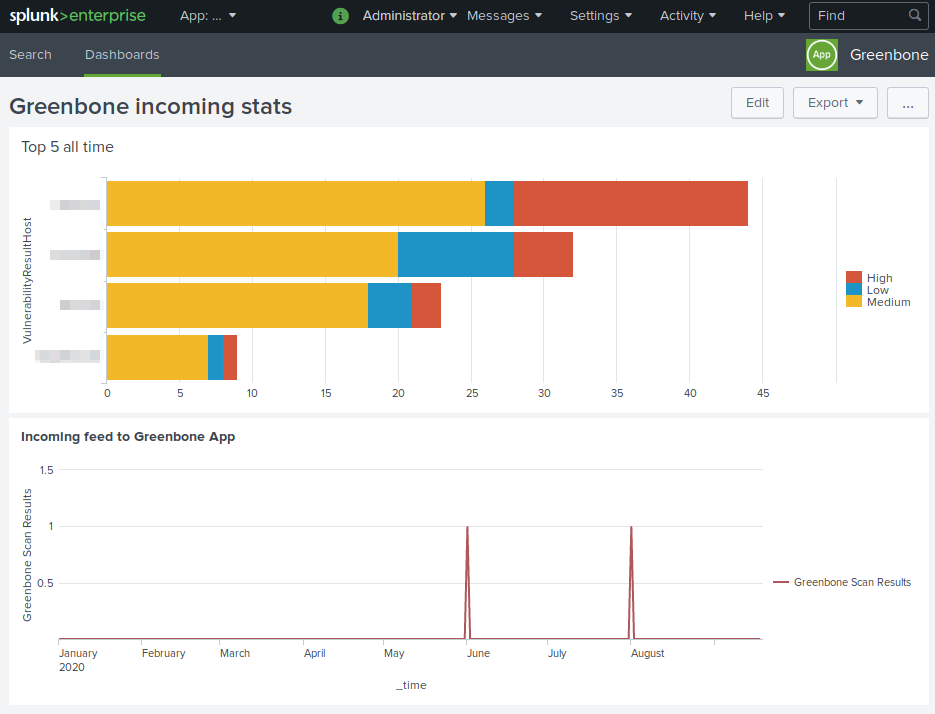
Рис. 17.20 Панель мониторинга для 5 наиболее затронутых хостов и для входящих отчетов.¶

Сноски